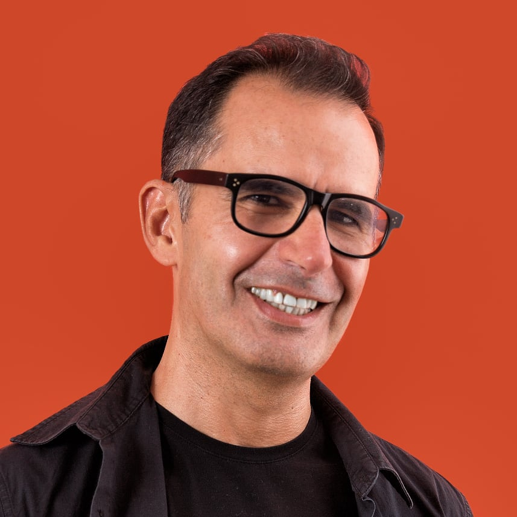

Diagnóstico de processos e roadmap de automação
Fevereiro 2026
A Accountbase tem mais de 20 anos de operação e uma equipa de cinco pessoas que gere uma carteira crescente de clientes. Mais de metade dessa carteira fica pela relação, não pelo preço. Num mercado onde as avenças tendem a comprimir-se, esse vínculo relacional é o verdadeiro ativo da empresa.
O crescimento tem acentuado nos últimos meses. Com mais clientes a entrar, o processo de onboarding, que envolve cerca de 40 tarefas manuais, começa a mostrar os seus limites. Não há um guião único. As tarefas estão distribuídas pela equipa, mas sem garantia de que o procedimento é sempre o mesmo, independentemente de quem trata ou de como o dia está a correr.
A Fixed to Flow chegou a este projeto a partir de uma relação já existente. Esse contexto de proximidade é o ponto de partida para um diagnóstico que reflita o que existe de facto, não o que existe no papel.
O crescimento acelerado cria três tensões concretas que precisam de ser endereçadas antes de qualquer decisão de implementação.
O processo atual não foi desenhado para este ritmo. Com cerca de 40 tarefas manuais por novo cliente, sem um playbook único, a consistência do serviço depende demasiado de quem está disponível e em que condições. À medida que o número de clientes cresce, essa dependência torna-se um risco operacional real.
A componente relacional que distingue a Accountbase tem de sobreviver à melhoria de processos. Automatizar mal destrói exatamente o que a empresa construiu ao longo de duas décadas. Um workflow que não reflete o processo real é um sistema que ninguém vai usar, ou pior, que vai criar mais trabalho do que resolve. A automação bem feita preserva e amplifica a relação. A automação mal feita substitui-a por fricção.
Antes de construir, é preciso medir. Sem mapear o que existe e sem quantificar o tempo real de cada processo, qualquer estimativa de ROI é uma suposição. E decisões baseadas em suposições têm custos que só aparecem mais tarde. Preparar antes de estimar não é perder tempo. É poupar o tempo que seria desperdiçado em soluções construídas sobre bases erradas.
O trabalho da Fixed to Flow assenta em dois princípios que se aplicam a qualquer projeto de automação e AI.
Diagnóstico como fundação. Compreender antes de construir. Mapear a realidade, medir o tempo, quantificar os custos. Não o que está documentado ou como devia ser, mas o que acontece de facto no dia a dia da equipa. Este é o ponto de partida que faz sentido.
Decisões baseadas em dados. Cada recomendação que a Fixed to Flow apresenta está ancorada em medições reais, não em benchmarks genéricos de setor. O modelo de ROI por alteração proposta é construído sobre os números da Accountbase, não sobre estimativas de mercado. Isso significa que, após receber o relatório, a equipa tem toda a informação necessária para decidir com clareza o que faz sentido avançar, em que ordem, e com que expectativa de retorno.
Fase 1: diagnóstico e roadmap
O foco desta fase é exclusivamente diagnóstico e preparação. Sem protótipos. Sem código. O objetivo é ter uma base sólida sobre a qual qualquer decisão de implementação possa ser tomada com confiança.
Preparação e análise prévia (5h). Antes de qualquer sessão, a Fixed to Flow revê os documentos, ferramentas e processos existentes. A equipa da Accountbase não perde tempo a fazer o trabalho de contexto nas sessões. Chegamos preparados.
Sessão de mapeamento de workflows (3h). Sessão remota com a equipa operacional. O objetivo é mapear as cerca de 40 tarefas do processo de onboarding: quem faz o quê, onde há fricção, o que é inconsistente entre pessoas ou momentos. Este mapeamento é a fundação de todo o trabalho seguinte.
Sessão de mapeamento de dados (2h). Sessão remota. Onde vivem os dados (Drive, TOC Online, Sheets, portais), como estão estruturados, o que é reutilizável. A estrutura de dados é o que determina o que é possível automatizar e com que nível de esforço. Sem a conhecer, qualquer estimativa de implementação é especulativa.
Medição de tempo por workflow (4h). Acompanhamento e registo do tempo por tarefa pela equipa, com apoio na recolha e análise dos resultados. O objetivo é quantificar o tempo real por tarefa. Esta medição é a base do modelo de ROI. Sem ela, qualquer cálculo de retorno é uma aproximação.
Acompanhamento dos sócios (3h). Duas sessões com os sócios: alinhamento no início do projeto e validação de prioridades e resultados intermédios no final. Garante que o diagnóstico reflete o que importa para o negócio, não apenas o que é tecnicamente possível.
Sessão de introdução à IA para a equipa (2h). Sessão remota curta para toda a equipa. O objetivo é apresentar o que a IA consegue fazer, o que não consegue, e o que é relevante no contexto de contabilidade. Desmistificar, alinhar expectativas, abrir espaço para que as pessoas se envolvam com o processo em vez de o temerem. É difícil melhorar processos com uma equipa que não compreende o que vai mudar e porquê. No final da sessão, cada membro da equipa sai com um pequeno assistente de IA configurado para o seu contexto de trabalho. Algo prático e imediato que pode usar no dia a dia, não apenas teoria.
Análise e documentação (6h). Processar toda a informação recolhida, classificar oportunidades por impacto versus esforço e modelar o ROI por alteração proposta.
Relatório, roadmap e modelo ROI (7h). Entregável final: relatório completo com o diagnóstico, roadmap faseado com recomendações, e modelo de ROI por cada alteração proposta.
| Atividade | Horas |
|---|---|
| Preparação e análise prévia | 5h |
| Sessão de mapeamento de workflows | 3h |
| Sessão de mapeamento de dados | 2h |
| Medição de tempo por workflow | 4h |
| Acompanhamento dos sócios | 3h |
| Sessão de introdução à IA para a equipa | 2h |
| Análise e documentação | 6h |
| Relatório, roadmap e modelo ROI | 7h |
| Total | 32h |
No final da Fase 1, a Accountbase recebe:
A proposta de implementação é um momento separado. Após receber o relatório, a Accountbase decide como e se avançar, com toda a informação necessária para o fazer com confiança.
€2.500 + IVA
Esforço
~32h
Duração
3-4 semanas
Faturação
50%-50%
Gustavo Pimenta acompanha pessoalmente todo o projeto, do primeiro mapeamento ao relatório final. A sólida relação já existente com a Accountbase permite começar com contexto real, assim como agilizar toda a comunicação e entregáveis.

Mais de 25 anos a trazer ideias à vida. Produtos digitais, liderança de equipas, mentoria de líderes em processos de transformação. O que o move é o lado humano da tecnologia: ajudar pessoas a adaptar-se sem perder o que as torna únicas.
Há três anos, saiu do cargo de Chief Product Officer de uma startup suíça para se dedicar inteiramente a ajudar pessoas e organizações a trabalhar com IA. Aprendeu fazendo. Experiências em público, ensino desde miúdos de 10 anos a fundadores de startups. Foi assim que desenvolveu a sua abordagem: prática, hands-on, focada no que se pode usar imediatamente.
Mais sobre o seu trabalho no LinkedIn.
O que distingue este trabalho: